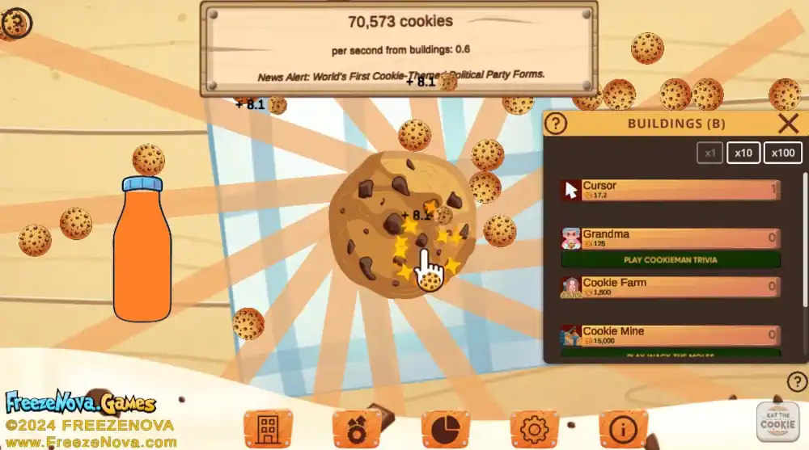

How To Play
- Click the Giant Cookie: Start by clicking on the giant cookie to earn cookies, and track your progress at the top of the screen.
- Buy Automating Buildings: Once you have enough cookies, purchase cursors and grandmas to automate your cookie production.Check how many hearts you have (5 to start), and click on a revealed enemy with a power level equal to or less than that.
- Unlock More Structures: As you progress, unlock powerful buildings like factories, farms, and cookie mines to increase your output.
- Upgrade Your Empire: Use your cookies to buy upgrades that enhance your baking power.
- Expand and Dominate: Keep building and upgrading to grow your cookie empire and become an unstoppable cookie-making machine. 
Sidenote
Automation is key—click to start, but invest in buildings and upgrades to let your cookies grow automatically! Keep an eye out for new opportunities to boost production.
Reference Guide
| Icon | Name | Quantity of Cookies | Special Effects |
|---|---|---|---|
 |
Cursor | 17.2 | They will click for you |
| Grandma | 125 | They bake slowly but steady | |
 |
Cookie Farm | 1,5000 | Harvest Cookies |
 |
Cookie Mine | 15,000 | Will give you 50 cookies every 5 seconds |